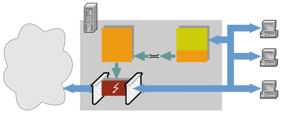
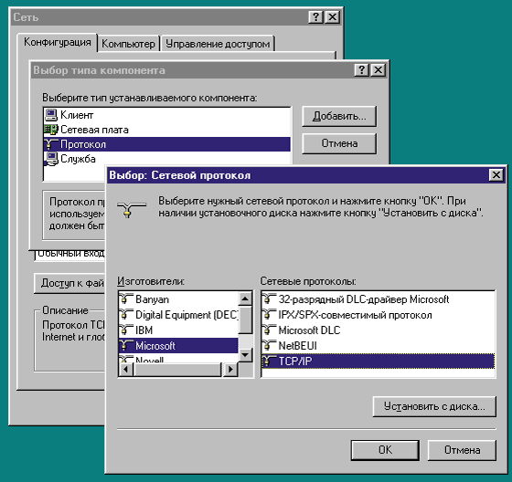
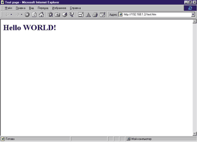

shurick_a@mail.ru
После того, как принято решение о подключении к Интернету, всем приходится решать одну и ту же задачу - каким методом подключения воспользоваться и как организовать это подключение. В типовых случаях, таких как dial-up доступ одного компьютера (с помощью модема) или подключение локальной сети по выделенной линии, используются стандартные, проверенные временем решения. Но достаточно часто приходится сталкиваться с ситуацией, когда не имеет смысла тратить деньги на аренду отдельного канала, но потребность в подключении к Интернету внутренней сети предприятия все же существует. Причем в таких случаях обычно требуется ограничить круг лиц, для которых возможен доступ к WWW.
Как ни странно, но для данного случая стандартного решения не существует. Каждый выходит из положения по-своему, и эффективность решения определяется в конечном счете знаниями и опытом системного администратора.
В данной статье мы рассмотрим как раз один из вариантов построения системы доступа к Интернету небольшой локальной сети с процедурой авторизации пользователей. Шаг за шагом мы пройдем все этапы настройки ПО и разработаем несколько сценариев, которые помогут связать воедино все компоненты системы.
Хочется отметить, что предложенный способ вовсе необязательно будет оптимальным. Импульсом к написанию данной статьи стало в первую очередь желание показать, что, используя стандартное ПО Linux, можно реализовать решения практически любой степени сложности.
Наша задача
Итак, перед нами стоит задача обеспечить подключение к Интернету локальной сети небольшой организации. Связь с провайдером осуществляется через модемное соединение (dial-up). Право доступа к Интернету должны иметь не все сотрудники, а только те, у которых есть санкция руководства. Разумеется, доступ к внутренним ресурсам локальной сети должен быть у каждого. Кроме того, необходимо вести статистику, показывающую, кто из сотрудников сколько времени провел в Интернете и с какой машины осуществлялся доступ.
Решение
Платформа
Прежде всего определимся с платформой. Наиболее популярны сегодня две идеологии операционных систем (ОС) - Windows в различных вариантах и клоны Unix. Первые легки в настройке и эксплуатации, имеют интуитивно понятный интерфейс. Однако обратная сторона такой простоты - достаточно высокие требования к аппаратным ресурсам, жесткая привязка к возможностям конкретной программы и, в итоге, немалая стоимость установки и сопровождения системы в целом. Клоны Unix, в частности, Linux, по сути представляют собой набор небольших, быстрых, проверенных временем утилит, из которых, как из кубиков в конструкторе, можно собирать функциональные системы любой сложности и, что самое главное, - со свойствами, которые необходимы в данный момент. В результате получается гибкая система с высокой производительностью, стабильная в работе и практически не требующая сопровождения. К тому же при использовании Linux исчезает "головная боль", связанная с лицензионной чистотой полученного программного комплекса.
Но подобная гибкость требует от пользователя гораздо более глубоких знаний о внутренних процессах, происходящих в недрах ОС. Интерфейс командной строки в этом случае - скорее стандарт, чем исключение (хотя в последнее время эта ситуация стала активно меняться). Кроме того, необходимо свободно ориентироваться в доступном ПО. В результате требования к квалификации администратора Linux-системы подчас значительно выше, чем к администратору систем на базе Windows.
В этом, на мой взгляд, и кроется основная причина того, что на начальном этапе тестируются решения на базе различных вариантов Windows как более удобные в настройке. Но статистика показывает, что в конечном счете серьезные проекты, особенно требующие большой степени готовности, чаще реализуются на базе клонов Unix (известно, например, что более половины Web серверов в Интернете - это Apache for Linux). Поэтому оставим в покое всевозможные WinGate и WinProxy, а возьмем стандартный дистрибутив Linux и соберем из его компонентов то, что задумали.
Рассмотрим возможные требования к создаваемой системе (в дальнейшем будем называть ее сервером доступа, или системой доступа). Итак, необходимо, чтобы система:
- была как можно проще в эксплуатации для пользователей - это сэкономит время на обучение персонала;
- была как можно стабильней - поэтому будем стараться использовать готовое и отлаженное ПО в качестве "строительных блоков", соединяя их в единое целое небольшими сценариями на shell и Perl;
- по возможности ограничивалась конфигурированием только сервера - любой администратор знает, что очень утомительно ставить и настраивать клиентские части тех или иных программ на рабочих станциях (особенно если их много).
Теперь самое время ознакомиться с тем, как вообще можно решать поставленную нами задачу.
Связь с провайдером
Для подключения локальной сети к Интернету при помощи модема обычно предлагают два варианта. Первый из них больше подходит, если вы платите за трафик, а второй оптимален, если платить за время, проведенное в Интернете.
В первом случае выход в Интернет осуществляется при помощи стандартного для Linux набора программ - pppd, chat плюс несколько скриптов на shell. Происходит это следующим образом - вначале пользователь дозванивается до провайдера и устанавливает с ним связь по протоколу PPP или, значительно реже, SLIP. После этого полученным каналом может пользоваться любой сотрудник организации. Сеанс связи длится до тех пор, пока работу не закончит последний пользователь. Как только это произошло, канал закрывается, и модем "кладет трубку".
Второй вариант - это развитие первого; он позволяет ощутимо экономить время работы в Сети. Для этого в системе дополнительно устанавливается демон diald, который берет на себя заботу об организации связи с провайдером, а также следит за трафиком. Если в течение заранее обусловленного времени (например, 5 мин) не происходит обмена данными между локальной сетью и Интернетом, то diald "кладет трубку". При первой же попытке пользователя подключиться к Интернету diald снова дозванивается и устанавливает связь.
Так как большинство провайдеров в России берут повременную оплату за свои услуги, в дальнейшем мы будем рассматривать второй, более сложный вариант.
Авторизация
Выше в числе задач мы указали такую проблему, как авторизация пользователей, которым открыт доступ к Интернету. Обычно она решается путем установки на компьютере, используемом для выхода в Интернет, какого-либо сервера авторизации - например, socks5 (http://www.socks.nec.com), а на рабочих станциях - клиентов для него. Но для нас этот способ не подходит: во-первых, мы не хотим устанавливать дополнительные программы на компьютеры пользователей, а во-вторых, далеко не все приложения поддерживают работу через socks5 (а те, которые поддерживают, не всегда делают это корректно). Какой же выход?
Неплохо было бы воспользоваться тем, что обязательно установлено на компьютере пользователя, собирающегося работать в Интернете, а именно браузером. Необходимо лишь передать на сервер доступа логин и пароль, а, как известно, HTML-формы совместно с CGI-сценариями позволяют выполнять куда более сложные задачи.
Итак, для авторизации будем использовать браузеры пользователей и Web-ориентированный интерфейс, а для запрещения или разрешения пересылки пакетов TCP/IP из внутренней сети в Интернет лучше всего подойдет встроенный в ядро Linux межсетевой экран (firewall). Следовательно, к необходимому нам ПО прибавятся ipfwadm - утилита для управления межсетевым экраном (в последних дистрибутивах Linux те же функции выполняет ipchains) и Apache - наиболее широко применяемый Web-сервер для Linux (все это входит в состав популярных дистрибутивов Linux).
Теперь создаем HTML-форму с двумя полями "Login" и "Password", пишем небольшой CGI-скрипт, который примет данные пользователя, проанализирует их и соответствующим образом настроит межсетевой экран. Вот и все, задача решена. Но в этом решении кроется одна серьезная опасность. Дело в том, что право конфигурировать межсетевой экран имеет только привилегированный пользователь, а давая CGI-сценариям права пользователя root, мы своими руками создаем потенциальную брешь в защите сервера от вторжения.
С одной стороны, нам необходимы права root для управления межсетевым экраном, а с другой, мы не желаем давать слишком больших прав пользователям. Получается заколдованный круг. Но это только на первый взгляд.
На самом деле проблема разграничения прав доступа давно решена. Вспомните приложения, построенные по клиент-серверному принципу (базы данных SQL - яркий тому пример). Пользователь, работающий с базой, может не иметь представления о количестве полей в его таблице. Он видит только те, которые ему нужны для работы, и может делать с ними только то, что разрешил администратор. Почему бы и нам не использовать подобный подход?
Разобьем систему доступа на две независимые части - серверную и клиентскую. Серверная часть, с правами root, будет принимать запросы от клиентской на открытие или закрытие связи с Интернетом, анализировать их корректность и права доступа, а затем или выполнять запрос, или игнорировать его. Клиентская часть (стандартные CGI-скрипты, минимальные права) будет принимать запросы от пользователей, желающих получить доступ в Интернет, и передавать серверной на обработку.
Межпроцессное взаимодействие
Осталось решить, каким образом клиентская и серверная части будут обмениваться между собой данными. Здесь особых проблем возникнуть не должно, так как задачи межпроцессного взаимодействия в многозадачных ОС приходится решать на каждом шагу, и для этого имеется ряд эффективных методов (они описаны в любой более или менее серьезной книге по Unix). Нам необходимо лишь выбрать самый подходящий. С моей точки зрения, в нашем случае вполне обоснованным будет использование FIFO-каналов - это достаточно надежно и легко в реализации.
Вкратце напомню, что это такое. FIFO - особый тип файла в файловой системе, совместимой с Unix. Как и обычные файлы, FIFO-каналы имеют имя и путь; поэтому их еще называют именованными. От стандартного файла FIFO отличает то, что его могут открыть сразу два процесса, как бы с двух сторон, причем один процесс обязан читать из канала, а другой - записывать в
него. В результате получается однонаправленное средство передачи данных, т. е. как раз то, что нам нужно.
Подведем итоги
|  |
| Рис.1. Система доступа для решения нашей задачи.
|
Схематически придуманная нами система показана на рис. 1. Теперь окончательно определим набор инструментальных и программных средств, необходимых для реализации проекта.
- Возможность доступа в Интернет - т. е. модем, телефонный номер и договор с провайдером на предоставление услуг доступа.
- Набор программ для организации связи - pppd, chat и демон автоматического дозвона по требованию (diald).
- Функционирующий Web-сервер для запуска CGI-скриптов, доступный каждому пользователю локальной сети (для Linux это обычно Apache).
- Средство для управления межсетевым экраном: в Linux с ядрами до 2.0 это утилита ipfwadm, в более современных версиях ( 2.1, 2.2 ) - ipchains.
- Язык программирования для написания CGI-скриптов и серверной части нашего приложения. Воспользуемся для этого языком Perl. С развитием Интернета его популярность резко возросла, так как Perl, первоначально ориентированный на обработку текстовой информации, как нельзя лучше подошел для генерации динамически изменяемых HTML-страниц. Кроме того, для него разработано огромное количество библиотек и модулей (см. http://www.perl.com/CPAN), при помощи которых можно реализовать практически любой проект.
Теперь, когда цели и средства ясны, можно приступать к работе.
Настройка программ
С чего начать?
Конечно, с проверки, все ли необходимое ПО установлено и правильно функционирует. Вначале проверим работу сетевого соединения нашей Linux-машины с локальной сетью организации.
Обычно настроить сетевую подсистему предлагается на этапе установки Linux. Это, пожалуй, наиболее быстрый и простой способ. Необходимо лишь ответить на несколько вопросов: о типе сетевой карты, значениях IP-адреса, маске подсети, широковещательном адресе. Все остальные действия по конфигурированию системы будут выполнены автоматически. Если этого сделано не было, то придется все настраивать вручную или воспользоваться одной из программ, облегчающих этот процесс (в Red Hat, например, это netcfg).
Подробно на тонкостях конфигурирования мы останавливаться не будем, так как существует множество подробных руководств и описаний данного процесса (самый основательный, на мой взгляд, NET3-HOWTO). Отмечу лишь, что IP-адреса следует выбирать из диапазонов, специально зарезервированных для использования во внутренних сетях.
Диапазоны IP-адресов для различных классов сети
| Класс сети | Маска | Сетевые адреса |
| A | 255.0.0.0 | 10.0.0.0 - 10.255.255.255 |
| B | 255.255.0.0 | 172.16.0.0 - 172.31.255.255 |
| C | 255.255.255.0 | 192.168.0.0 - 192.168.255.255 |
Если вы не сами устанавливали систему или не помните, как настроен сетевой интерфейс, то определить это можно следующим образом. Наберите команду ifconfig, и в ответ вы должны получить нечто похожее на это:
lo |
Link encap:Local Loopback inet addr:127.0.0.1 Bcast:127.255.255.255 Mask:255.0.0.0 UP BROADCAST LOOPBACK RUNNING MTU:3584 Metric:1 RX packets:57 errors:0 dropped:0 overruns:0 TX packets:57 errors:0 dropped:0 overruns:0 |
eth0 |
Link encap:10Mbps Ethernet HWaddr 00:00:C0:CF:7E:CE inet addr:192.168.1.1 Bcast:192.168.1.255 Mask:255.255.255.0 IPX/Ethernet 802.2 addr:00000001:0000C0CF7ECE UP BROADCAST RUNNING PROMISC MULTICAST MTU:1500 Metric:1 RX packets:3806468 errors:0 dropped:0 overruns:0 TX packets:172494 errors:0 dropped:0 overruns:0 Interrupt:5 Base address:0x250 Memory:c0000-c2000 |
Здесь мы видим не что иное, как список сетевых интерфейсов, сконфигурированных в системе. Если среди них присутствует интерфейс с именем eth0, значит, драйвер Ethernet-карты установлен и успешно функционирует. Кроме того, на основе полученной информации можно сделать несколько полезных выводов о настройках системы. IP-адрес нашей Linux машины - 192.168.1.1 и маска подсети - 255.255.255.0, т.е. мы имеем сеть класса C. Эти данные можно взять за основу для конфигурации всей остальной сети предприятия.
Так как на рабочих станциях сотрудников обычно установлена какая-нибудь из версий Windows, единственное, что для них потребуется, - установка и настройка протокола TCP/IP (рис. 2). Процедура эта многократно описана и трудностей, как правило, не вызывает.
|  |
| Рис. 2. Установка протокола TCP/IP.
|
Если процесс установки и настройки TCP/IP прошел удачно и никаких сообщений об ошибках не получено, можно попытаться "увидеть" Linux-машину. Делается это обычно с помощью утилиты ping. В командной строке набираем ping 192.168.1.1 и нажимаем Enter. Если Linux приняла наш запрос, то она ответит примерно так:
Pinging 192.168.1.1 with 32 bytes of data: Reply from 192.168.1.1: bytes=32 time=3ms TTL=64 Reply from 192.168.1.1: bytes=32 time=2ms TTL=64 Reply from 192.168.1.1: bytes=32 time=2ms TTL=64 Reply from 192.168.1.1: bytes=32 time=1ms TTL=64 |
После этого можно перевести дух - сеть из двух компьютеров на базе TCP/IP работает. Осталось провести аналогичные настройки на всех остальных машинах в сети, и мы получим то, что называют интрасетью. Само собой разумеется, IP-адреса у всех компьютеров должны быть разные, но из указанного выше диапазона.
Настройка межсетевого экрана
Итак, сеть на основе протокола TCP/IP у нас организована, и информационные пакеты могут свободно циркулировать по ней. Настала очередь настройки средства контроля и управления трафиком - межсетевого экрана. Для его организации не нужно никакого дополнительного ПО, кроме небольшой утилиты управления - ipfwadm (ipchains в ядрах Linux 2.2 и выше). Все необходимое содержит в себе ядро Linux. Надо лишь суметь включить эту возможность, так как по умолчанию в дистрибутивах Linux поставляются ядра с отключенной поддержкой механизмов защиты.
Для активизации внутреннего межсетевого экрана и еще нескольких необходимых нам в дальнейшем функций ядро необходимо будет перекомпилировать. У начинающих знакомиться с миром Unix необходимость перекомпиляции или сам процесс зачастую вызывают некоторую опаску и недоверие. На самом деле ничего сверхъестественного в пересборке ядра нет. Необходимо лишь выполнять все действия последовательно, вдумчиво и аккуратно.
Начать необходимо с установки в систему исходных текстов ядра, если это не было сделано раньше. Перейдем в каталог /usr/src и посмотрим, есть ли там подкаталог с именем linux-2.X.XX, где 2.X.XX - текущая версия ядра. Если такой подкаталог существует и он имеет подкаталоги с файлами, значит, исходные тексты в системе уже установлены. Если же такого подкаталога нет, их придется установить вручную. Сделать это можно по-разному - все зависит от конкретного дистрибутива Linux.
Если дистрибутив представляет собой набор архивов с расширениями tar.gz, то достаточно скопировать в /usr/src файл с именем linux-2.X.XX.tar.gz и дать команду на развертывание архива:
tar -xzvf linux-2.X.XX.tar.gz
В дистрибутивах от Red Hat и подобных им все делается еще проще. Подмонтируйте CD-ROM с дистрибутивом к файловой системе Linux:
mount /dev/cdrom /mnt/cdrom
и перейдите в подкаталог /mnt/cdrom/redhat/rpms. В нем находится файл с именем kernel-source-2.X.XX-1.i386.rpm. Это и есть исходные тексты ядра, упакованные в RPM-пакет. Данный формат был разработан специалистами фирмы Red Hat (http://www.redhat.com) специально для упрощения процедуры установки ПО. Чтобы установить его в систему, достаточно команды:
rpm -i -h kernel-source-2.X.XX-1.i386.rpm
и все содержимое пакета будет распаковано и размещено в необходимых местах файловой системы.
Если ваш дистрибутив состоит из пакетов других форматов (Debian, Slackware и т.д.), вам придется самостоятельно разобраться, как с ними работать. В любом случае надо добиться того, чтобы в /usr/src находились исходные тексты ядра. Кроме того, полезно создать символическую ссылку на них командой:
ln -s /usr/src/linux-2.X.XX /usr/src/linux
Сейчас она нам не пригодится, но часто бывает нужна для корректной установки некоторых пакетов программ.
Итак, исходные тексты у нас установлены. Далее переходим в каталог /usr/src/linux-2.X.XX и все прочие манипуляции будем выполнять в нем. Набираем команду:
make config
После ее запуска мы получим целую серию запросов, на которые нам предстоит ответить либо Y (т. е. включить поддержку данного свойства), либо N (выключить поддержку), либо M - модуль. Последнее означает, что данное свойство не будет встроено непосредственно в ядро, а при необходимости будет подключаться в виде модуля. На этом этапе следует быть особенно внимательным, так как неверно введенные данные впоследствии могут привести к большим проблемам в работе всей системы. Если в процессе настройки вы поняли, что где-то совершили ошибку, лучший выход - нажать Ctrl-C и начать все сначала.
Из довольно большого числа пунктов настроек нам нужно включить лишь несколько из описанных ниже, поэтому, если нет необходимости менять текущее свойство, можно просто нажать Enter и перейти к следующему.
Итак, чтобы включить функцию межсетевого экрана и использовать Linux-машину в качестве шлюза из локальной сети в Интернет, необходимо включить следующие свойства ядра:
CONFIG_EXPERIMENTAL =Y CONFIG_FIREWALL = Y CONFIG_INET =Y CONFIG_IP_FORWARD =Y CONFIG_SYN_COOKIES =Y CONFIG_IP_FIREWALL =Y CONFIG_IP_FIREWALL_VERBOSE =Y CONFIG_IP_MASQUERADE =Y CONFIG_IP_ACCT =Y |
Кроме того, нам понадобятся и эти свойства:
CONFIG_PPP = Y CONFIG_SLIP =Y CONFIG_SLIP_COMPRESSED = Y CONFIG_SLIP_SMART = Y CONFIG_SLIP_MODE_SLIP6 =Y |
К механизмам защиты и маршрутизации они отношения не имеют, но необходимы для корректной работы коммуникационных демонов pppd и diald.
Наконец, все нужные свойства ядра включены, и мы добрались до конца процедуры конфигурации. Самая ответственная часть настройки позади, и теперь дело за компилятором. От нас требуется лишь набрать:
make dep && make clean && make zImage
и запастись терпением. В течение не менее чем 10 минут над исходными текстами ядра будут проводиться различные манипуляции, и, в конце концов, будут созданы два файла - само ядро, лежащее в каталоге arch/i386/boot/zImage, и вспомогательный файл System.map, записанный в текущем каталоге.
Следующим нашим шагом будет установка нового ядра в систему. Эта процедура сама по себе проста, но достаточно ответственна. Дело в том, что заменив старое ядро на то, что получилось в процессе компиляции, мы рискуем потерять доступ к системе в случае, если где-то была допущена ошибка. Linux просто откажется загружаться или будет зависать, не дойдя до конца процедуры инициализации. Поэтому вначале скопируем новое ядро на дискету и попытаемся загрузиться с нее. И только убедившись, что все прошло нормально, заменим старое ядро на новое.
1. Копируем новое ядро на дискету и перезагружаемся:
cp arch/i386/boot/zImage /dev/fd0
2. Если загрузка прошла успешно, переименовываем старое ядро в резервное на тот случай, если новое покажет себя не с лучшей стороны и необходимо будет "откатиться" на исходные позиции:
mv -f /vmlinuz /vmlinuz.old mv -f /System.map /System.old
3. Устанавливаем новое ядро из его каталога:
cp arch/i386/boot/zImage /vmlinuz cp System.map /System.map lilo
Не забудьте про последнюю команду! Она вызывает загрузчик LILO, чтобы тот обновил ссылки на новый вариант ядра и согласовал все необходимые данные.
4. В завершение процедуры настройки перезагружаемся.
Вот, в общем, и все, что касается сборки ядра с новыми свойствами. Если все же возникли какие либо трудности, обратитесь к Kernel-HOWTO - в этом документе процедура сборки описана более подробно.
Проверка межсетевого экрана
После всех проведенных операций где-то в недрах ядра заработал фильтр IP пакетов - межсетевой экран. Чтобы окончательно убедиться в этом, проведем небольшой эксперимент. Но для начала немного теории.
Как известно, информация в Интернете распространяется в виде пакетов, состоящих из двух частей - заголовка со служебной информацией и тела с передаваемыми данными. Заголовок, в свою очередь, содержит данные о типе пакета, адресе источника, адресе получателя и некоторые другие. Так вот, суть работы межсетевого экрана состоит в анализе заголовков поступивших пакетов и принятии, на основе набора правил, решений - что с этими пакетами дальше делать (пропускать или блокировать). Наборы правил можно динамически изменять. Делается это при помощи программы-администратора ipfwadm (или ipchains в версиях ядра 2.2) и многочисленных ее ключей. Существует четыре типа наборов правил: управляющие входом (input), выходом (output), пересылками (forwarding) и отчетами.
Суть нашего эксперимента будет состоять в следующем. Мы блокируем все пакеты, адресованные Linux, т.е. настроим межсетевой экран таким образом, чтобы наша машина стала невидимой для остальных. Практической пользы от такой настройки немного, но это даст нам 100%-ную гарантию работоспособности фильтра.
Вначале при помощи использованной ранее команды ping убедимся, что Linux с новым ядром все еще "видна" в сети. С любой рабочей станции набираем команду:
ping 192.168.1.1
Если отклик получен, перейдем на компьютер с межсетевым экраном и наберем следующие команды:
ipfwadm -I -f ipfwadm -O -f ipfwadm -F -f
а затем:
ipfwadm -I -p deny ipfwadm -O -p deny ipfwadm -F -p deny
Первые три команды очищают все наборы правил, если таковые были заданы, а следующие три блокируют любые пакеты, адресованные на Linux-машину. Снова переходим на рабочую станцию и набираем:
ping 192.168.1.1
Если ответа не получено, то с удовлетворением можно констатировать, что межсетевой экран работает.
Настройка связи с провайдером
Переходим к следующей фазе нашего проекта - настройке подсистемы дозвона и соединения с провайдером. Для удобства его стоит разбить на два этапа: 1) настройка PPP соединения и 2) установка и конфигурирование демона дозвона по требованию (diald).
Что касается первой части, то эта процедура достаточно стандартна и подробно описана во множестве источников, посему останавливаться на ней не имеет смысла. Подскажу лишь некоторые источники. Тем, кто предпочитает официальную документацию, стоит ознакомиться с PPP-HOWTO. Для тех, кто в первый раз собирается настраивать dial-up под Linux, на мой взгляд, стоит начать со статьи В. Водолазкого "Установка PPP-соединения в Linux", найти которую можно по адресу http://www.geocities.com/SiliconValley/Pines/7895. Мы же более основательно обсудим настройку демона diald, так как его конфигурирование под наши нужды имеет некоторые нюансы.
Прежде всего где его взять? Последнюю версию diald можно загрузить с сервера ftp://sunsite.unc.edu из каталога /pub/Linux/system/Network/serial. Файл называется diald-X.YY.tar.gz. Процедура установки стандартна для Linux, и с ней обычно не возникает проблем.
1. Разворачиваем архив
tar -xzvf diald.x.yy.tar.gz
2. Переходим в созданный каталог и, находясь в нем, вводим последовательно следующие команды:
make depend make make install
После этого демон установлен и практически готов к работе. Необходимо лишь немного подправить конфигурационные файлы.
Чтобы лучше понять то, что мы будем делать дальше, немного поясню принцип работы этой программы. diald создает SLIP-соединение на псевдотерминале и устанавливает маршрутизацию на получившийся интерфейс (вот зачем нам понадобилось включать поддержку SLIP в ядре). После этого он начинает отслеживать пакеты, проходящие по виртуальному каналу. Если в канале появляется трафик, т. е. кто-то пытается выйти в Интернет, diald перехватывает данные, анализирует их и на основе совокупности правил, определяемых администратором, присваивает им определенные таймауты. Далее пакеты отправляются по назначению, а таймауты заносятся в так называемый набор соединения. Как только в наборе появляется первый таймаут, diald начинает дозваниваться до провайдера и пытается установить соединение. Организовав сеанс связи, демон переустанавливает маршрутизацию на реальный канал. Связь с внешним миром установлена.
А в наборе соединения все это время не прекращается работа. Истекшие таймауты удаляются, а новые поступают. И так продолжается, пока по какой либо причине трафик не прекратится - например, вы на длительное время задержались на какой-либо страничке или вообще отошли от компьютера. Таймаутов в наборе становится все меньше и меньше (новые не поступают, а старые удаляются). И когда последний из них истекает, diald разрывает связь. С появлением в сети трафика все повторяется снова.
Теперь перейдем непосредственно к конфигурированию. Этот процесс состоит из трех частей:
- Создание скрипта соединения - файл /etc/diald/connect.
- Настройка основной конфигурации - файл /etc/diald.conf.
- Настройка правил таймаутов - файл /etc/diald/standard.filter.
Создание скрипта соединения. Как мы уже знаем, для организации сеанса связи необходимо выполнить несколько действий: дозвониться по телефону до поставщика услуг, пройти процедуру авторизации и запустить PPP-соединение. Так как у разных провайдеров этот процесс может довольно сильно различаться, то не имеет смысла встраивать эту процедуру в программу. Вместо этого удобно использовать внешний скрипт - вполне подойдет тот сценарий, что вы создали ранее, при настройке PPP-соединения. Однако с точки зрения отладки и дальнейшего сопровождения удобнее переделать "под себя" тот скрипт, что поставляется с дистрибутивом diald в качестве примера. Дело в том, что этот сценарий в процессе работы записывает в системный журнал подробную информацию о процессе дозвона, а она может очень пригодиться при каких-либо проблемах со связью.
Ниже приведен вариант файла /etc/diald/connect.
#!/bin/sh
NIT="ATZ" # Строка инициализации модема
PHONE="1234567" # Телефон провайдера
ACCOUNT="noname" # Ваш логин
PASSWORD="hjy56der" # Ваш пароль
# Определяем функцию для посылки
# сообщений в системный журнал
# и в FIFO-канал diald
function message ()
{
[ $FIFO ] && echo "message $*" >$FIFO
logger -p local2.info -t connect "$*"
}
# Начинаем процедуру связи
# Инициализируем модем
message "*** Initializing Modem ***"
chat "" $INIT OK ""
if [ $? != 0 ]
then
message "!!! Failed to initialize modem !!!"
exit 1
fi
# Пытаемся дозвониться
message "*** Dialing system ***"
chat \
ABORT "NO CARRIER" \
ABORT BUSY \
ABORT "NO DIALTONE" \
ABORT ERROR \
"" ATDT$PHONE \
CONNECT ""
case $? in
0) message "*** Connected ***";;
1) message "!!! Chat Error !!!"; exit 1;;
2) message "!!! Chat Script Error !!!"; exit 1;;
3) message "!!! Chat Timeout !!!"; exit 1;;
4) message "!!! No Carrier !!!"; exit 1;;
5) message "!!! Busy !!!"; exit 1;;
6) message "!!! No DialTone !!!"; exit 1;;
7) message "!!! Modem Error !!!"; exit 1;;
*) esac
# Проходим авторизацию
message "*** Send login and password ***"
chat \
login: $ACCOUNT \
password: $PASSWORD TIMEOUT 5 ""
if [ $? != 0 ] then
message "!!! Failed to send !!!"
exit 1
fi
# Все прошло удачно!
message "*** Protocol started *** "
|
Как видите, это стандартный сценарий на shell. Вам необходимо лишь заменить логин с паролем на те, которые дал провайдер, и, может быть, немного подправить блок, отвечающий за авторизацию. Не забудьте также сделать этот скрипт запускаемым:
chmod 755 connect
Настройка основной конфигурации. В главном файле конфигурации /etc/diald.conf задаются основные параметры устанавливаемого соединения и определяется поведение демона в различных ситуациях. Набор команд конфигурации у diald достаточно широк, что позволяет настроить его практически на любой режим работы. Мы же рассмотрим лишь те команды, которые необходимы. Итак, содержимое файла diald.conf:
# Протокол для связи с провайдером # у нас - PPP mode ppp # Вести журнал сеансов связи diald.log accounting-log /var/log/diald.log # Для управления демоном из внешних программ # организовать канал FIFO - diald.ctl. # Имейте в виду - для нас это важно! fifo /etc/diald/diald.ctl # Для дозвона использовать файл /etc/diald/connect - # тот самый, что мы создали выше connect /etc/diald/connect # Далее несколько команд, описывающих применяемый модем # Во избежание конфликтов в файле /etc/ppp/options # закомментируйте следующие опции: crtscts, lock, # modem, defaultroute device /dev/modem speed 115200 modem lock crtscts # Назначаем локальный и удаленный адреса нашего # соединения. Если при связи с провайдером IP-адрес # для вас выделяется динамически, то здесь можно # поставить любые свободные адреса из диапазона, # оговоренного при настройке нашей TCP/IP-сети. # При запуске PPP diald сам выставит корректные значения local 192.168.1.251 remote 192.168.1.252 # Провайдер дает нам динамический IP dynamic # Установить маршрут по умолчанию # на виртуальное SLIP соединение defaultroute # Максимальное количество неудачных попыток дозвона dial-fail-limit 10 # Задержка между попытками дозвона redial-timeout 5 # время ожидания завершения скрипта connect connect-timeout 120 # Файл с правилами для таймаутов include /etc/diald/standard.filter |
Настройка правил таймаутов. Это, пожалуй, самая сложная из всех процедур, так как требует знания внутренней структуры IP пакетов. Но, к счастью, файл standard.filter, приведенный в качестве примера в дистрибутиве, имеет вполне приемлемые для большинства случаев настройки. Оставив в нем все как есть, мы будем иметь набор правил, рассчитанный на трехминутную паузу между окончанием активности в Интернете и разрывом связи с провайдером. Если же предложенные установки вас не устраивают, то рекомендую сначала изучить структуру полей IP-пакетов, затем обратиться к файлу /etc/diald/diald.defs (в нем для удобства настройки каждому полю дано сокращенное название, которое затем используется в standard.filter) и только после этого править standard.filter по своему вкусу.
Комплексное тестирование
Теперь все манипуляции с конфигурированием позади, и ничто не мешает нам протестировать весь комплекс подготовленного ПО в совокупности. Проделаем это следующим образом.
1. Сбросим все настройки межсетевого экрана:
ipfwadm -I -f ipfwadm -O -f ipfwadm -F -f |
2. Установим все правила по умолчанию в "Разрешено":
ipfwadm -I -p accept ipfwadm -O -p accept ipfwadm -F -p accept |
3. Запустим diald:
/usr/sbin/diald
4. Далее при помощи текстового браузера Lynx (обычно он уже установлен в системе) попытаемся зайти на какой либо сайт, например, на поисковый сервер. Для этого введем следующую команду:
/usr/bin/lynx http://www.altavista.com
Если все было настроено корректно, то после нажатия Enter модем должен "поднять трубку" и начать дозваниваться до провайдера. Через некоторое время связь будет установлена. Но Lynx выдает сообщение о том, что не может соединиться с удаленным сервером, и попытки соединения прекращаются!
Не спешите расстраиваться - пока все идет, как положено. Дело в том, что при PPP-соединении с динамическими IP-адресами, в силу определенных особенностей этого протокола, первый пакет обычно бывает утерян и не доходит до адресата. В результате мы ждем ответа от сервера, а он об этом и не подозревает. Достаточно повторить введенную ранее команду, чтобы все заработало. Снова набираем
/usr/bin/lynx http://www.altavista.com
и указанная HTML-страница должна беспрепятственно загрузиться.
Подобный эффект наблюдается только при использовании динамических IP-адресов. Если вы счастливый обладатель статического IP-адреса, подобное неудобство вас не коснется.
Продолжаем эксперимент. Дождавшись конца загрузки, понаблюдаем за соединением. Примерно через 3 минуты diald должен дать команду на разрыв соединения и "положить трубку".
Если у вас все прошло именно таким образом, значит, все работает как надо. В противном случае проанализируйте последние строки системного журнала (/var/log/messages). Скорее всего, там вы найдете информацию о причинах неудач.
И последнее. Для "очистки совести" такой же эксперимент необходимо провести и с удаленного компьютера. Перейдем на любую рабочую станцию, запустим браузер и попытаемся зайти на какой-нибудь сайт. Реакция diald на эти действия должна быть аналогичной. Если что-то пошло не так, проверьте корректность настройки протокола TCP/IP на этой машине.
На этом этап комплексного тестирования можно считать успешно завершенным. Мы получили вполне законченный комплекс. В таком виде его с успехом можно использовать в организациях, где нет необходимости ограничивать доступ к Интернету. Нужно лишь как следует настроить межсетевой экран. Не секрет, что в нынешнем состоянии он представляет собой широко открытые ворота для любого хакера. Но это тема для отдельного, довольно обстоятельного разговора. Мы же перейдем к следующему "кирпичику" нашего "конструктора" - Web-серверу.
Web-сервер
Обычно во время установки Linux на компьютер Web-сервер инсталлируется автоматически, со всеми необходимыми каталогами и файлами конфигурации. В подавляющем большинстве случаев это Apache, хотя для нас не имеет принципиального значения, какой именно сервер используется, лишь бы он выполнял две стандартные функции: 1.
В ответ на запрос пользователя посылал HTML-страничку (это, конечно же, умеет делать любой Web-сервер). 2.
Имел бы возможность запускать CGI-программы (это умеет делать большинство серверов, но не всегда данная возможность бывает включена по умолчанию).
Наша задача - убедиться, что все работает так, как нужно. Для этого снова перейдем на любую рабочую станцию, запустим браузер и в поле ввода адреса сайта наберем URL, записанный в виде IP-адреса, например
http://192.168.1.1
После этого нажмем Enter. Если в ответ мы получим сообщение, что "Соединение с сервером не может быть установлено", значит, что-то не в порядке: или Web сервер не установлен, или он настроен не на тот IP, или "слушает" нас не на стандартном 80-м порте. В любом из этих случаев необходимо обратиться к документации к серверу или к WWW-HOWTO, а также проверить корректность настроек в конфигурационных файлах.
Если в ответ на запрос в окне браузера появится HTML-страничка или содержимое каталога либо хотя бы какое-нибудь сообщение об ошибке (например, такое: Forbidden. You don't have permission to access / on this server.) - прекрасно. Сервер у нас установлен и реагирует на запросы.
Далее убедимся, что он способен отображать подготовленные нами страницы. Для этого на Linux-машине в любом редакторе наберем следующий текст:
<!DOCTYPE HTML PUBLIC "-//W3C//DTD HTML 4.0 Transitional//EN">
<html>
<head>
<title>Test page</title>
</head>
<body>
<h1>Hello WORLD!</h1>
</body>
</html>
|
Сохраним его в файле с именем test.htm. Затем скопируем в каталог, предназначенный для размещения Web-страниц. Для Apache это обычно /home/httpd/html (см. опцию DocumentRoot в файле srm.conf). После этого снова переходим на рабочую станцию и в адресной строке браузера набираем:
http://192.168.1.1/test.htm
В ответ на это мы должны получить HTML-страничку, показанную на рис. 3.
|  | Рис. 3. Вид тестовой HTML-страницы.
|
Если этого не произошло, необходимо убедиться в том, что права доступа к этой странице установлены правильно, а также в том, что каталог, куда мы поместили тест, действительно предназначен для размещения Web-страниц.
Разобравшись с HTML, переходим к CGI-сценариям. Цель та же - убедиться, что мы сможем запускать их на выполнение. Для этого модернизируем тест следующим образом:
#!/usr/bin/perl -w
print <<END_of_HTML_text;
Content-type: text/html
<html>
<head>
<title>Test page</title>
</head>
<body>
<h1>Hello WORLD!</h1>
</body>
</html>
END_of_HTML_text
|
Сохраним его под именем test.pl и сделаем запускаемым:
chmod 755 test.pl
Далее необходимо добиться, чтобы этот сценарий при старте из командной строки выполнялся без ошибок. Кроме того, необходимо обратить внимание на то, что между строками Content-type: text/html и html обязательно должна быть пустая строка, не содержащая ни пробелов, ни знаков табуляции. Она отделяет заголовок документа от тела и необходима для корректной работы протокола HTTP. Часто новички забывают об этой пустой строке, и CGI-сценарии отказываются работать, хотя при запуске из командной строки все проходит без проблем.
Если наш тест должным образом работает при вызове из командной строки, его необходимо сделать доступным для запуска с Web-сервера. Для этого его следует перенести в каталог, специально предназначенный для размещения CGI-сценариев. В дистрибутиве от Red Hat по умолчанию Apache настраивается на запуск CGI из каталога /home/httpd/cgi-bin. Сюда мы и скопируем наш тест. Далее, как обычно, переходим на рабочую станцию и в браузере набираем:
http://192.168.1.1/cgi-bin/test.pl
В ответ мы должны получить такую же HTML-страничку, как и в предыдущем случае. Если вместо этого пришло сообщение об ошибке, то не расстраивайтесь. Редко кому в первый раз удается запустить даже самый простенький сценарий, поскольку для успешного старта CGI должно выполняться много условий.
Попробуйте проверить все сначала - каталоги, права доступа, настройки в конфигурационных файлах Web-сервера, вспомните про пустую строку, о которой упоминалось выше. Имейте в виду, что сам GCI-сценарий должен быть доступен для всех не только на запуск, но и на чтение. Кроме того, каталог, в котором находится скрипт, должен быть выполняемым. Если ничего не помогает, ознакомьтесь с PERL FAQ (его периодически публикуют в fido7.ru.cgi.perl).
Еще один совет на тот случай, если вы окончательно зашли в тупик. Он касается тех, кто редактирует исходные тексты в каком-нибудь редакторе под Windows, а затем по FTP пересылает их на Linux-сервер. Так вот: убедитесь в том, что вы посылаете сценарий в текстовом, а не бинарном режиме. Это важно потому, что в клонах Unix и в DOS/WIN по-разному кодируются концы строк текстовых файлов. В Unix это символ с шестнадцатеричным кодом 0A (перевод строки), а в DOS/WIN - это два символа 0D 0A (возврат каретки и перевод строки). При копировании в текстовом режиме лишний символ удаляется автоматически, а в двоичном файл передается без изменения. Вот этот код 0D и ставит в тупик интерпретатор Perl, в результате чего скрипт не выполняется.
Но вот (надеюсь) ваш тестовый скрипт заработал. Взят еще один рубеж такой неподатливой, но очень интересной операционной системы. Как администраторы мы хорошо поработали. Весь необходимый программный комплект подготовлен и функционирует. Осталось только связать все это воедино, т.е. сделать из комплекта комплекс. Этим мы и займемся во второй части статьи.